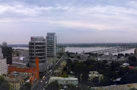
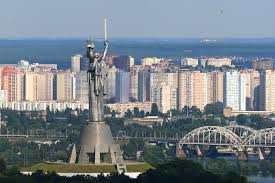

Привіт!
Вітаю вас на моему сайті - сайті про мою рідну Україну
Сайт буде містити наступні сторінки: цікаві місця,музика,їжа
Створення сайту дуже цікаве!
Cписок найбільших міст України:
- Київ
- Львів
- Дніпро
- Карпати
Дніпро
Карпати
Карпа́ты (укр. Карпати, нем. Karpaten, словацк. Karpaty, венг. Kárpátok, рум. Carpaţi, серб. Карпати) — горная система в Восточной Европе на территории Чехии,Словакии, Украины, Венгрии, Польши, Румынии, Сербии и частично Австрии (Хундсхаймер-Берге у Хайнбурга-на-Дунае и Нидеростеррайхише Инзельбергшвелле у Мистельбаха). Согласно римским хроникам I века н. э., в данной местности жило дакийское племя карпов. Историки и лингвисты затрудняются дать ответ на вопрос: племя названо по горам, или наоборот. По наиболее распространённой гипотезе название Карпаты — производное от пра-и.е. *sker-/*ker- «горная каменистая местность, скалы». Из современных языков ближайший эквивалент содержится в албанском языке: karpë «гора, камень», однако, наиболее тождественное объяснение названия Карпат можно найти в армянском языке: qaripat (qar — камень, pat — стена), что означает «Каменная стена». В эпоху античности и средневековья Карпаты именовались Сарматскими горами. Также назывались Угорскими (Венгерскими)
Більше інформації у вікіпедіїДніпро
Днепр (Днипро́[5][6], укр. Дніпро́, с 1926 по 2016 — Днепропетровск) — город, областной центр Днепропетровской области Украины, центр Днепровской агломерации[7]. Четвёртый город по численности населения Украины после Киева, Харькова и Одессы. До 1796 и с 1802 по 1926 год город имел название Екатериносла́в, с 1796 по 1802 год — Новоросси́йск, а с 1926 по 2016 год — Днепропетро́вск. Один из крупнейших промышленных центров Украины. Особенно развиты чёрная металлургия, металлообрабатывающие цеха, машиностроение и другие отрасли тяжёлой промышленности. Днепропетровск являлся одним из ключевых центров оборонной и космической промышленности советского периода, в городе было размещено Министерство чёрной металлургии. По причине развитой военной промышленности Днепропетровск был закрытым для посещения иностранцами городом вплоть до 1990-х годов. По данным на 1 января 2019 года, в городе проживало 998 103 человек наличного населения, в границах горсовета — включая пгт Авиаторское — 1 000 576 человек[8]. В 1976—2011 годах численность населения Днепропетровска превышала миллион человек (также как временно в конце 2017 — начале 2018 годов)Перейти к разделу «#Население»
Київ
Ки́їв (МФА: [ˈkɪjiu̯] ( прослухати)) — столиця України, одне з найбільших і найстаріших міст Європи. Розташований у середній течії Дніпра, у північній Наддніпрянщині. Політичний, соціально-економічний, транспортний та освітньо-науковий центр країни. Окрема адміністративно-територіальна одиниця в складі України й адміністративний центр Київської області. Районний центр Києво-Святошинського району. Адміністративно до складу Київської області не входить. Місце розташування центральних органів влади України, іноземних місій, штаб-квартир більшості підприємств і громадських об'єднань, що працюють в Україні. За «Повістю временних літ», Київ заснував полянський князь Кий зі своїми братами Щеком і Хоривом та сестрою Либіддю. Згідно з археологічними даними та писемними джерелами, початок безперервного розвитку Києва датується 2-ю половиною V ст. — 1-ю половиною VI ст.; осередком розширення Києва була гора Замкова[7]. Був столицею Русі, Київського князівства, Великого князівства Руського, Української Народної Республіки, Української Держави та Української Радянської Соціалістичної Республіки. Також був адміністративним центром однойменного литовсько-польського воєводства, козацького полку, російської губернії, радянської округи, німецької генеральної округи та радянської області. Один із найстаріших історичних центрів Східної Європи та християнства — Софійський собор — та Києво-Печерська лавра внесено до списку Світової спадщини ЮНЕСКО.
Львів
Львов (укр. Львів, [ˈʎʋiu̯], произношение (инф.)) — город областного подчинения на Украине, областной центр Львовской области. Национально-культурный, образовательный и научный центр, крупный промышленный центр и транспортный узел, в печати и в народе называется столицей Галиции и Западной Украины. По численности населения седьмой город страны. Львов основан галицким князем и королём Руси Данилой Романовичем в середине XIII века[2][3], около 1272 года становится столицей Галицко-Волынского княжества[4]. В дальнейшем город являлся частью Речи Посполитой (1349—1772) как Руського воеводства, Габсбургской монархии как Королевства Галиции и Лодомерии (1772—1918), Западно-Украинской Народной Республики (1918), потом вновь частью Польской республики (1919—1939) и Украинского государства (1941). В период с 1939 по 1941 и с 1944 по 1991 гг. в составе Украинской ССР, начиная с 1991 года — независимой Украины. День города отмечают в 1-ю субботу мая. Исторический центр Львова внесён в список Всемирного наследия ЮНЕСКО. В городе находится наибольшее количество памятников архитектуры на Украине[5]. В 2009 году ему присвоено звание культурной столицы Украины[6]. Город периодически занимает ведущие места в рейтингах туристической и инвестиционной привлекательности[7][8][9]. В 2012 году был одним из четырёх городов Украины, принимавших чемпионат Европы по футболу.